01About
无人机智能巡检课题组面向道路、桥梁、工业装备等真实工程场景，研究无人机自主巡检、三维重建、路径规划、负载控制、缺陷检测与故障诊断方法。
课题组师从长安大学工程机械学院夏晓华副教授，围绕交通基础设施智能运维中的“看得清、飞得稳、判得准、落得下”问题开展研究。现有工作覆盖无人机外业数据采集、桥梁点云重建、道路病害图像识别、视觉异常检测、巡检标准规范与智能检测系统构建。
现有工作
- 无人机自主巡检与路径规划
- 道路与桥梁病害图像识别
- 裂缝检测与语义分割模型
- 智能巡检装备与数据集构建
- AI 模型能耗、碳排放与可持续部署
02Research
- 三维重建与感知：围绕桥梁、道路和复杂工程场景，开展点云重建、多源感知、结构场景建模与目标定位研究，为无人机巡检提供高精度空间理解能力。
- 路径规划与负载控制：面向弱 GPS、复杂地形和多载荷巡检任务，研究无人机自主路径规划、位姿保持、载荷协同控制与安全作业策略。
- 缺陷检测与故障诊断：结合深度学习、视觉异常检测和语义分割方法，开展道路病害、桥梁缺陷和工业设备异常的自动识别、定位与诊断。
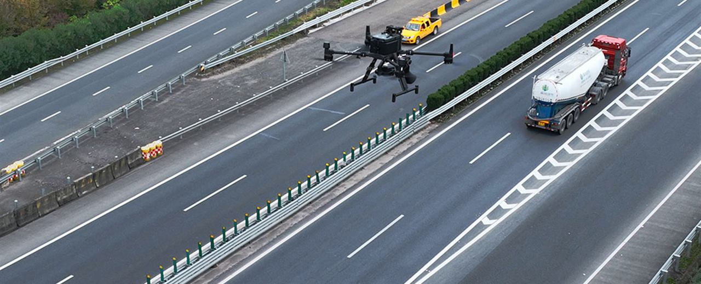
03Publications
围绕弱 GPS、弱通信条件下的无人机路面自动巡检，已撰写论文《Lateral positioning method for unmanned aerial vehicle automatic inspecting road》，投稿至《Journal of Field Robotics》。
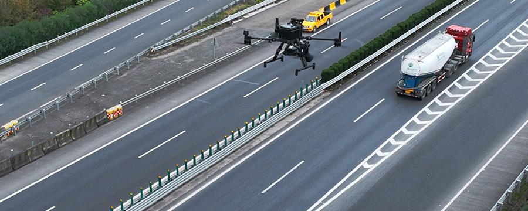
已有一区 Top 期刊 Journal of Cleaner Production 相关论文成果，为课题组交叉研究积累方法基础。
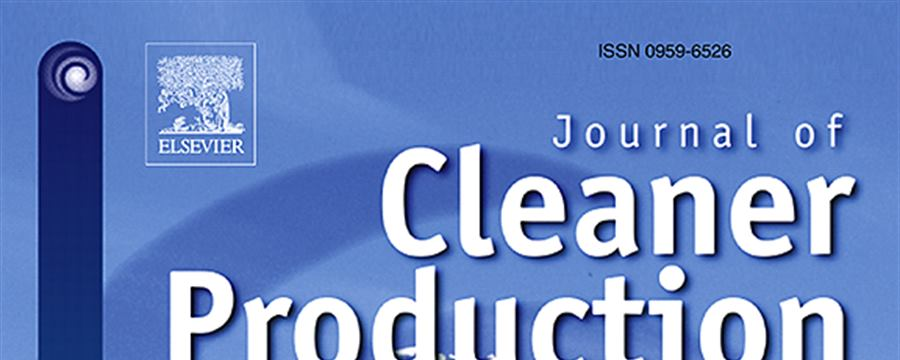
基于 Dinomaly 的多元特征融合视觉异常检测模型，在 M2AD 场景中提升故障诊断表现，获 2025 年中国大学生机械工程创新创意大赛智能制造赛国家二等奖。
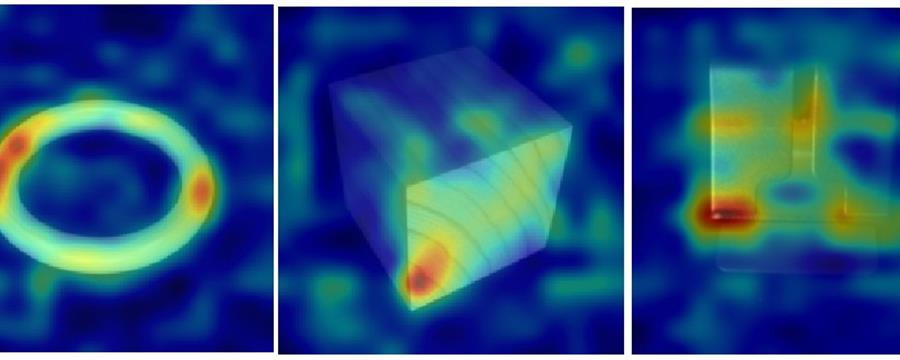
在桥梁病害检测、定位、无人机路径规划与检测报告自动生成任务中，承担点云三维重建、巡检路径规划与图像拼接工作，团队获国际优秀奖。
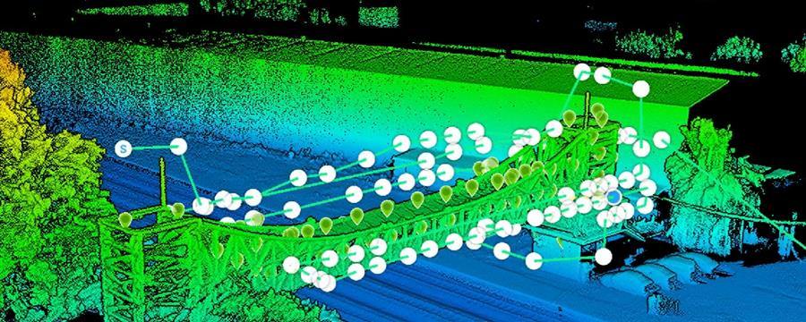
参与陕西省地方标准《无人机巡检高速公路路面病害技术规范》相关起草工作，围绕巡检平台、操作要求、应急预案、数据采集质量与数据存储格式等内容形成规范化支撑。
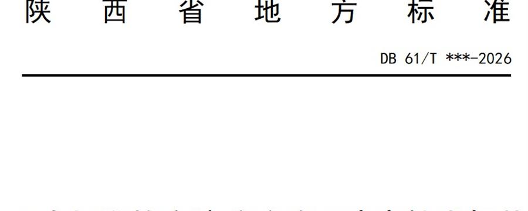
正在与其他课题组联合构建道路检测病害数据集，围绕路面裂缝、坑槽、破损等典型目标开展采集、筛选、标注与质量控制，为检测模型训练和工程验证提供数据基础。
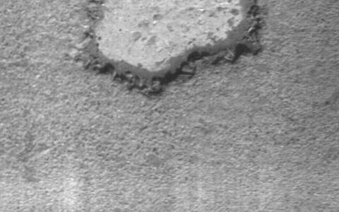
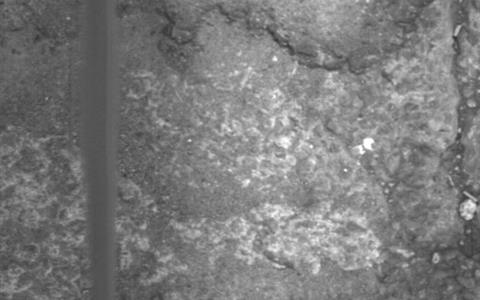
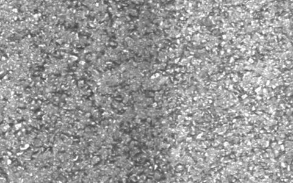
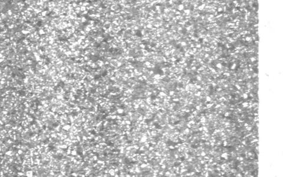
04Hardware Resources
课题组现有无人机平台、科研无人机与高算力服务器，可支撑外业采集、三维建模、模型训练、负载控制实验和工程验证。
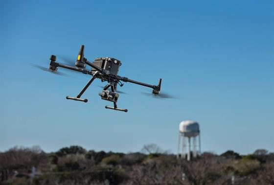
用于道路、桥梁等场景的数据采集与高精度巡检任务，可搭配视觉与测绘载荷开展外业验证。
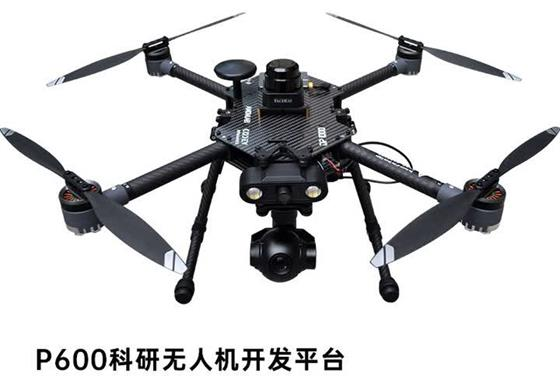
用于自主控制、负载协同和巡检策略验证。
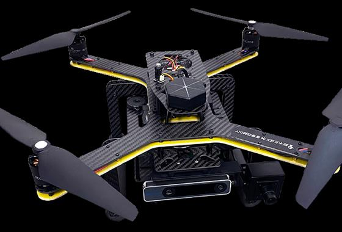
服务多源感知、算法测试与复杂巡检任务验证。
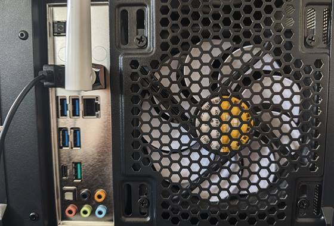
支撑深度学习训练、三维重建实验、模型复现与系统部署测试。
- 与中交二公局等工程单位保持应用合作，面向真实道路、桥梁和基础设施运维场景开展需求牵引、外业验证与成果落地。
- 与芯语科技（宇树西北总代理）等企业资源形成联动，为机器人平台、具身智能验证和无人系统集成提供设备与工程接口支撑。
- 依托视觉仿生感知及类脑智能、智能产线检测、机器人具身智能、无人机智能巡检、挖掘机智能化、压路机智能化、基础设施智能运维等方向的协同力量，形成“感知-控制-装备-场景-运维”的交叉支撑体系。
05Personal Page
工学博士，毕业于西安交通大学机械工程专业，现为长安大学工程机械学院博士研究生导师、国际研究生导师，智能制造与机器人系主任、质量控制研究所所长、陕西省高速公路施工机械重点实验室副主任。长期从事机器视觉智能感知与智能制造、机器人具身智能与无人自主作业装备、基础设施智能运维等方向研究。
科研方面，主持国家自然科学基金、陕西省重点研发计划等科技项目 20 余项，在 Journal of Cleaner Production、Signal Processing、Measurement、Pattern Recognition Letters、中国公路学报等期刊和会议发表论文 70 余篇，授权发明专利 16 项、实用新型专利 22 项，登记软件著作权 14 项，完成科技成果转化 21 项。指导学生在人工智能算法、智能制造、未来飞行器、机械创新设计等竞赛中多次获得全国奖项。
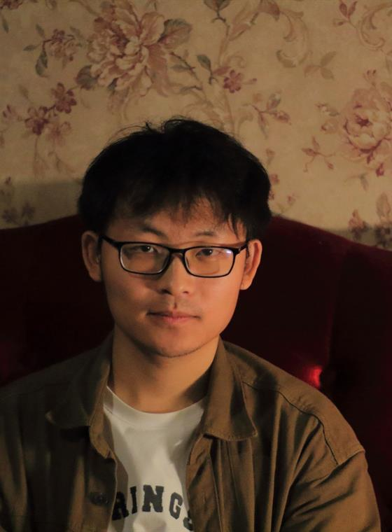
主要研究道路巡检无人机及路面病害自动定位与智能分析，聚焦弱 GPS、弱通信场景下的无人机自主巡检、视觉定位与路径规划，以及面向路面病害的图像采集、数据集构建和智能识别。相关成果包括道路巡检无人机论文工作、陕西省地方标准《无人机巡检高速公路路面病害技术规范》起草参与、道路检测病害数据集构建，以及桥梁巡检赛事中的点云重建与路径规划工作。
在智能制造方向，曾带领团队提出基于 Dinomaly 的多元特征融合视觉异常检测模型，结合 CNN 与 Transformer 特征优势提升无监督故障诊断表现，获中国大学生机械工程创新创意大赛智能制造赛国家二等奖。